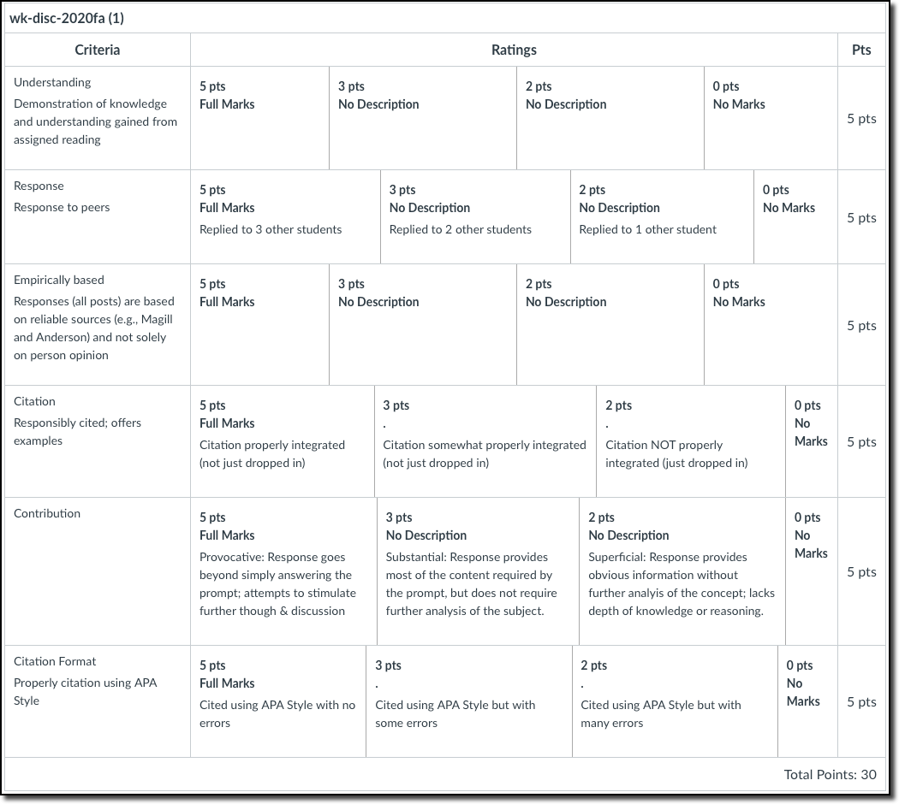
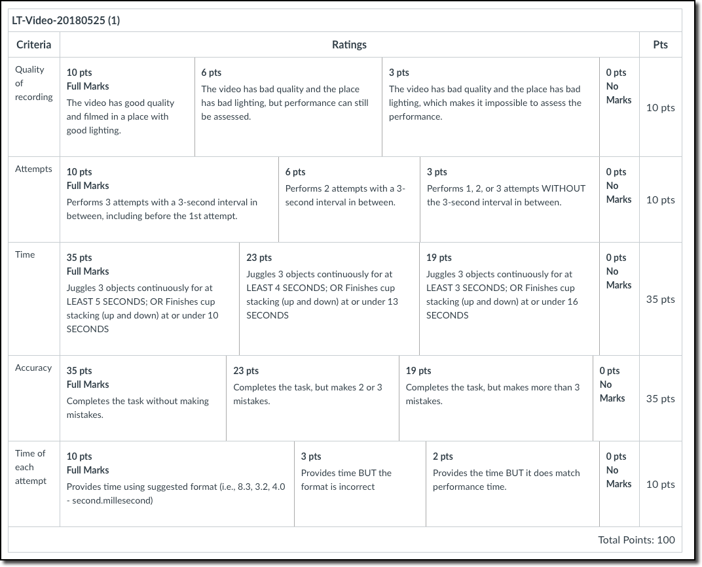

KIN 377: Motor Learning
Department of Kinesiology, Cal State Northridge
Syllabus - Fall 2022 (Online)
Instructor Info
Brief Bio
Ovande Furtado Jr., Ph.D.
Dr. Furtado received a B.A. in Physical Education from the Federal University of Parana, Curitiba, PR - Brazil. He earned his M.S. and Ph.D. degrees in Motor Behavior from the University of Pittsburgh, PA. Dr. Furtado’s line of research focuses on two main areas: (1) validation of observational models in psychomotor assessment instruments and (2) the relationship between motor skill competence, perceived motor competence, physical activity levels, and body composition.
Office Hours
See Section 3.5 for more information
Contact Info
Email: ovandef@csun.edu
Office: Redwood Hall 289
For course-related questions, please use our mailing list. This way other students will benefit when I answer your question(s). Refer to Canvas for the mailing list email address.
Hint: Add the email to your contacts for easy access throughout the semester.
General Information
Course Description
Study of principles , theories, and research evidence regarding the nature of motor performance and learning with particular emphasis on factors that impact learning a skill through practice.
teaching
examples of principles
educational and clinical settings
include both catalog and my own description
do the same with the other items from the excel file
Course Prerequisite
KIN 200: Foundations of Kinesiology (3)
Course Format
This course consists of readings, written assignments, weekly responses, and check-ins on our Canvas page.
This is a Fully Online class (OF) in which all class sessions and exams are presented in an online environment; OF courses have no on-campus meetings.
For this course, lessons are pre-recorded and students go over the material on their own pace. However, assignments related to each module are due at the end of each week during the semester (see course sequence).
This course is not self-paced and is not the “softer, easier way”! This means that you have to 1) check in regularly and 2) respond to the weekly assignments.
Required Technology Resources
This course will be taught completely online (no campus meetings will be required), in an asynchronous format (this course will not have scheduled live meeting times). All activities, assignments and exams in this course will be completed via Canvas. To succeed in this course, you must have reliable access to a computer and internet connection. CSUN offers currently enrolled students the option to borrow devices such as computers and internet hotspots through its Device Loaner Program.
Course Expectations and Goals
At the conclusion of this course, students should be able to:
- Describe the difference between motor learning and performance.
- Describe and understand different theories of control to explain how motor skills are performed and learned.
- Describe and understand the underlying mechanisms and processes involved in the production and control of movement.
- Discuss the relationship between attention and performance.
- Understand and demonstrate how factors relevant to the individual and to the environment influence the learning process.
- Understand and demonstrate how feedback types and schedules influence motor skill learning.
- Understand, describe, and demonstrate how practice schedules influence motor skill learning.
- Describe how and why the concept of individual differences is important in skill acquisition.
- Describe and understand motor learning and control issues for special populations.
- Develop and implement methods of performance assessments.
- Develop and implement a series of practice sessions designed to teach and/or learn a novel motor skill.
Student Learning Outcomes (SLO’S)
- Apply an integrated kinesiological approach to encourage the adoption of healthy and physically active lifestyles, across diverse populations;
- Apply evidence-based practices to enhance the study of human movement;
- Demonstrate competent problem-solving strategies through intentional practices; and
- Demonstrate knowledge of kinesthetic forms, processes, and structures as they apply to the personal expression and culture of human movement.
Textbook
Magill, R. A., & Anderson, D. (2020). Motor learning and control: concepts and applications (12th Ed.). McGraw-Hill Education.
Link to Matador Bookstore: https://bit.ly/37yiD7u
The program below is only available during the Fall and Spring semesters.
myCSUNDigitalAccess Program
- You are enrolled in a course which is part of the myCSUNDigitalAccess (MCDA) program.
- The MCDA program provides digital materials to students at a deeply discounted price.
- Some or all of your materials for this course are being provided digitally through the MCDA program.
- ALL enrolled students will have access to the materials through Canvas by the 1st day of class, but more likely earlier.
- If you want to keep access throughout the semester, you need do nothing. A charge will be placed on your CSUN student portal account (just like tuition, but a separate charge) around the 5th or 6th week of classes. You will then be responsible for paying the university.
- If you choose to obtain your materials elsewhere you have until
9/25/22to Opt-Out (see instructions below). Those who Opt-Out by9/25/22will lose access and will not be charged. - Anyone who does not Opt-Out by the
9/25/22deadline will be charged and those charges will not be reversible. - Click here for more information.
Price
To see how much you will be billed if you opt-in, click the link below:
Opt-out Instructions
If you wish to opt out of this program and not purchase access to the required digital materials you will need to follow the steps below by 9/25/22:
- Go to https://accessportal.follett.com/0150
- Click on Create an Account on the lower right
- Create an account using your CSUN email account
- Select the course(s) you wish to Opt-Out from
You will receive an email confirming your Opt Out selection, access will be removed and you will need to purchase the materials elsewhere on your own. For more information about this program, please visit the following link: https://bit.ly/3pcWcfb
- Go to https://accessportal.follett.com/0150;
- Click on Create an Account on the lower right;
- Create an account using your CSUN email account’
- Select the course(s) you wish to Opt-Out from.
You will receive an email confirming your Opt Out selection, access will be removed and you will need to purchase the materials elsewhere on your own. For more information about this program, please visit the following link: https://bit.ly/3pcWcfb
Additional resources
Access to Computer & Internet
Although not required, it is suggested that you have access to a computer (not simply a tablet and/or smartphone) and Internet throughout this course. Note that CSUN students are eligible to check out tech devices from CSUN at NO COST.
Mini Juggling Balls
One of the requirements of this course is to learn a motor skill. If you select juggling, I suggest you to acquire the mini juggling balls, which are small and have the recommended weight for beginners.
If you choose to use any object other than the mini juggling balls, understand that your performance may be negatively affected by it. When performing the exchange technique (required for this activity), at a given point, performers need to hold two objects in one hand. This becomes a problem if large objects are being used; i.e., tennis balls.
Speed Stacks Sport Stacking Set
If you choose to learn the cup stacking, I recommend you to acquire the cups used in national and international tournaments, or grab a set of less expensive ones from Amazon or elsewhere.
DO NOT USE ORDINARY PLASTIC CUPS WHEN PRACTICING AS THEY ARE NOT DESIGNED FOR CUP STACKING. These cups will significantly affect your performance and your grade, in case you choose cup stacking as your learning task.
Course Policy
I will detail the policy for this course below. Basically, don’t cheat and try to learn stuff.
Grading Policy
25%: Weekly Quizzes [SLO’s 1].
25%: Online Discussions [SLO’s 2].
20%: Learning Task Performance (final video submission) [SLO’s 1, 2, 4].
20%: Learning Task Reflection Paper [SLO’s 1, 2, 4].
10%: Learning Task Updates [SLO’s 1, 2, 4].
One quiz and one discussion with the lowest score will be dropped at the end of the term.
Grading Scale
A 93.00-100.00 | A- 90.00-92.99 B+ 87.00-89.99 | B 83.00-86.99 | B- 80.00-82.99 C+ 77.00-79.99 | C 73.00-76.99 | C- 70.00-72.99 D+ 67.00-69.99 | D 63.00-66.99 | D- 60.00-62.99 F <59.99
In recognition of the fact that grading, however carefully done, will always be imperfect, this class will utilize a “round up” rule for assigning final grades. I will round up from .5% and above, but anything below this will round down. In other words, 79.5 will round up to 80, while 79.4 will round down to 79 even.
Requests for an Incomplete (I) must conform to university policies. Among other requirements, “I” is possible only for instances in which you are demonstrating passing work in the class.
Attendance Policy
Showing up is 80 percent of life – Woody Allen, via Marshall Brickman
Although this is an online course, “attendance” is crucial. And by that I mean: check in Canvas several times a week.
E-mail Policy
While taking this course, only communicate with me via Canvas > Inbox.
If your message concerns a non-private matter (i.e., assignments, content, deadlines, etc.), then please post your question to the Q&A Forum (Canvas > Discussions > Q&A Forum), which can be answered by any student taking the course.
Office Hours
In-person
Tuesdays from 9-11 am at RE 289.
Online via Zoom
By appointment only via https://bit.ly/drfurtado-bookme
Make-Up Exam Policy
Unless the student has discussed the situation with the instructor before the assignment’s due date and an arrangement has been made, a missed assignment will result in a grade of zero. Note that making “arrangements” will only be possible given the student provides a valid and written excuse from a reputable source.
Late Assignments
Unless you have made previous arrangements, a late assignments will be docked off 5% per day (first 4 days) it is late. All assignments are closed after the 4th day.
Extra Credit
With the exception of the extra 5 points awarded to the final video performance - LINK (either juggling or cup stacking), there is no individual extra credit granted.
Disabilities Policy
Federal law mandates the provision of services at the university-level to qualified students with disabilities.
This instructor, in conjunction with California State University Northridge, is committed to upholding and maintaining all aspects of the federal Americans with Disabilities Act of 1990 (ADA) and Section 504 of the Rehabilitation Act of 1973. If you are a student with a disability and wish to request accommodations, please contact the office of Students with Disabilities Resources located in 110 Student Services Building, or call (818) 677-2684 for an appointment. Any information regarding your disability will remain confidential. Because many accommodations require early planning, requests for accommodations should be made as early as possible. Any requests for accommodations will be reviewed in a timely manner to determine their appropriateness to this setting.
Academic Dishonesty Policy
Please, stop and read the information below; this is important!
Each student is expected to be familiar with, and abide by, the conditions of student conduct, as presented in the CSUN Catalog, with emphasis on sections entitled, Student Conduct Code, Academic Dishonesty, Faculty Policy on Academic Dishonesty, and Penalties. Any student engaging in academic dishonesty (e.g., cheating, fabrication, facilitating academic dishonesty, plagiarism) is subject to discipline, which may include a failing grade in the course, and may also be subject to more severe discipline by the University. Students are encouraged to visit the link below and become familiar with the Standards for Student Conduct.
http://www.csun.edu/a&r/soc/studentconduct.html
Reflection Paper Submission
Plagiarism is a serious violation of the CSUN Student Conduct Code. Be aware that borrowing a paper from a student who completed this course previously and writing your paper based on that student’s paper will be considered PLAGIARISM.
Turnitin (see below) will detect such misconducts as it checks every submission against a database of papers, as well as against the Internet.
Penalties: If caught, the student will receive a letter grade of “F” on BOTH the Reflection Paper and the Video Performance assignments, in which case the student will likely fail the course as these two assignments account for 40% of the course total grade.
What is Turnitin?
You should be aware that the Reflection Paper will be submitted via Canvas, which is connected to Turnitin. This is an automated system that instructors can use to quickly and easily compare each student’s assignment with billions of websites, as well as an enormous database of student papers that grows with each submission. Accordingly, you will be expected to submit assignments through the Canvas Assignment Tool in electronic format. After the assignment is processed, as an instructor, I receive a report from Turnitin that states if and how another author’s work was used in the assignment.
Course Requirements
To succeed in this course, you will be required to complete several assignments. To avoid surprises, be proactive and review these assignments.
Quizzes
Quizzes will be administered via Canvas and will assess the student’s understanding of the topic covered each week. Students are allowed to utilize class notes and the course text to answer the questions; however, collaboration with other students is not allowed.
Here are some other useful information about quizzes:
When taking quizzes, the questions will appear one at a time and locked after being answered. Thus, students are not allowed to go back and review answers after saving each question.
Correct answers will only be shown to students after the deadline of each quiz.
Refer to
Canvasand the course sequence for due dates. Please, avoid waiting until the “last minute” to take the quiz. Taking the quizzes earlier will give you enough time to troubleshoot potential technical problems; therefore, plan accordingly.You will be given a single attempt on each quiz. This means you need to study the material before taking each quiz. All quizzes are timed. Students will be given 20 minutes to finish and submit a quiz.
A quiz will only start if the student has a JavaScript-enabled web-browser. Contact CSUN IT should you run into technical issues when taking quizzes.
Once opened, a quiz will appear in a full-screen pop-up window that covers all the other windows and has no navigation control
It should be noted that the content of each quiz belongs to McGraw Hill (the publisher of our text). Therefore, federal copyright laws prohibit the dissemination of this material. It includes, but is not limited to, posting the quiz online and/or sharing the quiz with someone outside of the classroom.
Online Discussions
You will be required to complete several online discussions while taking this course. The details about each discussion topic will be provided on Canvas. Typically, there are two deadlines for this assignment. First, you need to answer the question I post (deadline 1), then respond to your classmates’ posts (deadline 2). Refer to our Class Schedule in Canvas.
I will post an announcement following the deadline of each discussion assignment pointing out potential issues.
I know how important it is for you to know your current grade in the class. That is why my priority is to grade most assignments (except for the paper) within 1 week of the deadline, which will be visible on the Canvas Gradebook. Note that journal grades will not be visible until all journals are graded (e.g., original posts and responses).
If your grades are not posted within a week after the deadline, or you believe the grade is inaccurate, feel free to email me about the status of your grade.
Learning Task Performance & Reflection Paper
Refer to Canvas for full requirements, but basically:
- You will be asked to choose either the 3-object Juggling or Cup Speed Stacking activity;
- Then, you will be required to practice and learn the selected activity;
- Before the end of the term (see Calendar for deadlines), you will be asked to video-record yourself performing the skill you have learned. This is the Performance portion of this assignment and accounts for 20% of the final grade;
- The 2nd part of this assignment is a Reflection Paper, which also accounts for 20% of the final grade. As you practice and learn the selected skill, you will be advised to use the Motor Learning Principles (full details on Canvas) you will be exposed to while taking this course.
- Throughout the term, you will be required to update me on your progress toward learning the selected skill (juggling or cup stacking). See Learning Task Updates below.
Learning Task Updates
You will be submitting several updates throughout the term. These “updates” are meant to keep you on track and ensure you are taking advantages of all the learning techniques covered in this course to master the selected skill. More information about this assignment will be provided on Canvas.
Final (yet important) Notes
How to Access our Course and Get Started
- Log into Canvas: https://canvas.csun.edu
- Under “My Courses,” locate our course and click on it.
- This will take you to the course home page.
Technology Requirements and Support:
- A computer and access to the internet (reliable connection)
- Google Chrome (web browser)
- A device to record video (phone, tablet, or laptop)
What I Expect of You:
- Online classes are deceiving. Many times new online learners expect them to be easier than face-to-face classes and are surprised to learn how time intensive they are.
- Plan your schedule to ensure you have approximately 10 hours per week to spend on this class and take time to identify where and when you’ll do your learning.
- Review the due dates for the assignments (see Calendar) to orient yourself to the flow of the learning. 4. This course requires regular engagement throughout each week. Plan to reserve a few hours each day to practice the skill you selected for the Learning Task assignment.
Online Etiquette
All learners in this course will expect to abide by our community ground rules (see below).
Ground Rules: In an effort to ensure our learning community develops, thrives and sustains throughout our time together, the following ground rules will be in effect at all times.
- Consider yourself a member of a community. A community is a group of individuals who work together to support a common goal or interest. We are working together to support the successful achievement of our learning outcomes.
- Log-in and participate regularly to group conversations and activities.
- Treat the diverse contributions made by other community members with respect.
- Have patience and a sense of humor with technology.
- Be a learner. Keep an open mind when introduced to new ideas that may challenge your perceptions.
- Ask for help when you need it, and assist others when possible.
- Understand that communications shared through text have a higher likelihood of being misinterpreted than words that are spoken. Therefore, when you type a thought or a comment, read it carefully before you submit it. If you question the way it is worded, read it out loud to yourself. If you still question the way it’s phrased, rewrite it.
- Contribute regularly to group dialogue, including discussion posts and replies. The contributions of each individual plays a role in the collective strength and diversity of our community.
- If, at any time, you feel that any of these ground rules has been violated by a member of our community, you are encouraged to bring your concern directly and immediately to Dr. Furtado. Clearly identify which ground rule has been violated and include specific evidence of the violation in your e-mail or phone call. Your concerns will be addressed promptly and in an individualized manner.
Accessibility, Academic, and Other Support Resources for Students
Disability Resources Available
The California State University does not discriminate on the basis of disability in admission or access to, or treatment or employment in, its programs and activities. Sections 504 and 508 of the Rehabilitation Act of 1973, the Americans with Disabilities Act of 1990, and various state laws prohibit such discrimination. If you need extra assistance with aspects of this course, please contact the Disability Resources and Educational Services (DRES) or the National Center on Deafness (NCOD). Reasonable and effective accommodations and services will be provided to students if the requests are made in a timely manner and with appropriate documentation in accordance with federal, state, and university guidelines. Please let me know if you need further information or assistance from me in order to facilitate your learning experience. If you would like to discuss your approved accommodation with me, please let me know and we can set up a virtual appointment.
Additional Campus Resources and Support
CSUN has a range of resources to support your academic goals, engagement with campus activities and physical and mental health. I encourage you to browse the links below throughout the semester and the rest of your time at CSUN. Please let me know if you would like additional information on any of the resources below. These links are also included on the Canvas site.
Academic and Technical Resources
University Library for browsing of books, articles, media and additional academic resources.
Learning Resource Center offers tutoring, a writing center, & more.
Disabilities Resource Educational Services (DRES) for assistance with accommodations.
CSUN Information Technology (IT) for technology support with Canvas and software related issues. Their office is open for calls/chat M-F from 8am-5pm PST.
CSUN’s Accessibility Policy for more information on CSUN’s goal to ensure that campus communication and information technology is accessible to everyone.
University Library Open Educational Resources (OER) for affordable Health Science textbooks and educational resources.
Additional Campus and Community Resources
Clubs and Campus Facilities
Oasis Wellness Center for a welcoming destination where students can find serenity and relaxation, including meditation, massages, and workshops focused on managing stress.
Klotz Student Health Center offering medical services, including Telehealth appointments.
Student Recreation Center (SRC) for exercise and leisure activity that promotes wellness.
Career Center for career, internship and job resources, resume writing, interview help & more.
USU for a variety of services including lactation space, veterans’ resources, and more.
Associated Students providing programs designed to enhance the campus environment.
Financial Aid & Scholarships offers aid for applications.
Additional Resources
CSUN with A HEART for valuable information that will connect you to various resources regarding the basic needs of students in the CSUN campus community.
Food Pantry at CSUN providing food and toiletries for CSUN students in need.
University Counseling Center offering free short term counseling services to students, including individual counseling, crisis intervention, group and workshops, and more.
Pride Center supporting LGBTQIA+ students through programming and outreach.
Office of Equity and Diversity supporting CSUN’s commitment to maintaining an environment where no member of the campus community is subjected to any form of prohibited discrimination in any University program or activity.
Help lines (after hours when the University Counseling is closed) for numerous topics/needs including suicide, drug help, rape or sexual assault, other crisis or urgent concerns and more.
Emergency MataCare grants, one-time grants to prevent evictions, urgent childcare issues, etc.
Class Sequence
Textbook: Magill and Anderson[1]
| Module | Week of | Topic | Assignments |
|---|---|---|---|
| 1 | 08/29/22 | Intro to Course & Survival Skills | Discussion 1 |
| 2 | 09/05/22 | Ch01: The classification of motor skills | Quiz Ch01 |
| 3 | 09/12/22 | Ch12: The stages of learning |
Quiz Ch12 |
| 4 | 09/19/22 |
Ch11: Defining and assessing learning |
Quiz Ch11 |
| 5 | 09/26/22 | Learning Task - Update 1 | Complete requirements and submit assignment by the due date |
| 6 | 10/03/22 | Ch14: Demonstration and verbal instructions | Quiz Ch14, Discussion Ch14 |
| 7 | 10/10/22 | Ch15: Augmented feedback | Quiz Ch15 |
| 8 | 10/17/22 | Ch16: Practice variability | Quiz Ch16 |
| 9 | 10/24/22 | Ch17: The amount & distribution of practice | Quiz Ch17, Discussion Ch17 |
| 10 | 10/31/22 | Learning Task - Update 2 | Complete requirements and submit assignment by the due date |
| 11 | 11/07/22 | Ch18: Whole and part-practice | Quiz Ch18 |
| 12 | 11/14/22 | Ch09: Attention | Quiz Ch09, Discussion 4 |
| 13 | 11/21/22 | Ch13: Transfer of learning | Quiz Ch13 |
| 14 | 11/28/22 | Learning Task - Update 3 | Complete requirements and submit assignment by the due date |
| 15 | 12/05/22 | → finish and submit the reflection paper → record and submit the performance video Refer to Appendices A, B, C |
Complete requirements and submit assignments by the due date |
| 16 | 12/13/22 | The instructor will be available to meet online via CSUN ZOOM to answer any questions students may have. |
Appendices
Appendix A
One of the major requirements of this course is to learn how to perform a motor skill (either Hand Juggling or Speed Cup Stacking). You will be required to practice, learn, and show proof of mastery for the selected skill by video recording your performance.
In addition to learning the skill of your preference, you will be required to write a reflection paper discussing your experience.
NOTE: If you have mastered Hand Juggling and Speed Cup Stacking, contact the instructor as soon as possible to discuss alternative skills you may select to practice. Note that you may be asked to prove you have mastered both skills before you are assigned a new skill.
The choice of skill
You will be given the option to choose the skill to practice and learn.
You will learn in this course that Juggling and Cup Speed Stacking are placed under two different categories as far as motor learning is concerned. Each skill has different cognitive and motor skill demands. Juggling is categorized as a continuous skill. Continuous skills have not detectable beginning and end once the performer has started performing it. Cup Speed Stacking on the other hand is considered a discrete skill, which has a clear beginning and end. One begins by stacking up the first “three” on the left/right and ends by stacking down the opposite “three” (left/right).
My suggestion:
Watch the demo videos below for both skills;
Pick the one that is most appealing to you;
Complete the tutorial for the chosen skill (Appendix B);
Acquire the proper equipment and start practicing as per the recommendations outlined in this course;
When released, complete the update assignments (1, and 2);
If after completing the Update 2 assignment you feel the chosen skill is not for you, contact the instructor ASAP to receive permission to switch skills.
It is crucial you study the content of these three appendices. Appendix A covers the main instructions related to the LEARNING TASK ASSIGNMENT. In Appendix B, you find useful tutorials for both Juggling and Cup Stacking. You will choose one of these two skills to practice and learn throughout the term (Fall, Spring, Summer, or Winter). Appendix C covers the Motor Learning Principles (MLP) you will be introduced in this course. The MLP will be crucial when learning your chosen skill (either juggling or cup stacking).
This the major assignment for this course and accounts fo 50% of the final grade. Thus, it’s crucial you study the content of these three appendices.
Appendix D
Below you will find the evaluation rubrics used in KIN 377.
Online Discussions

Final Performance - Video

Reflection Paper